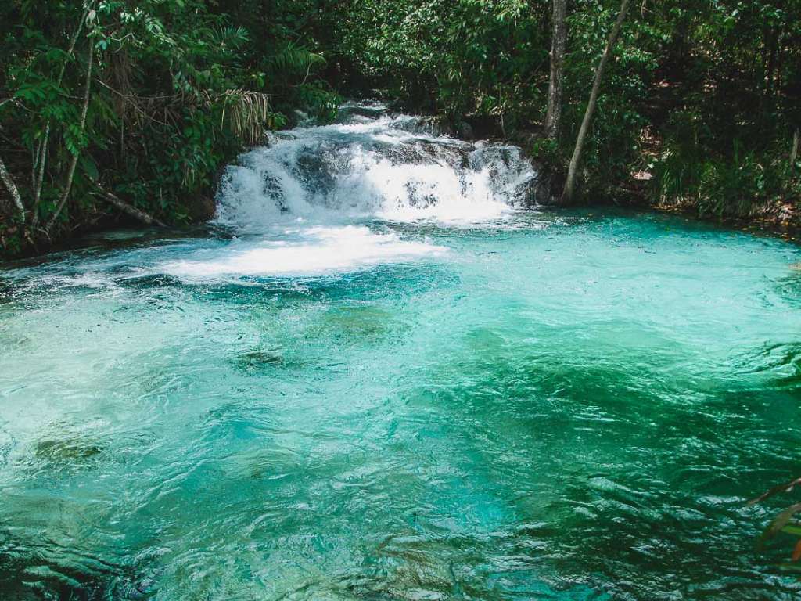

O Tocantins é o estado mais jovem do Brasil, criado em 1988, e está localizado na região Norte do país. Sua capital, Palmas, é uma cidade planejada conhecida por suas avenidas largas e crescimento acelerado. O estado possui paisagens naturais marcantes, como o Parque Estadual do Jalapão, famoso por suas dunas, cachoeiras e fervedouros. O Rio Tocantins é um dos principais rios da região e tem grande importância econômica e ambiental. A economia tocantinense baseia-se principalmente na agropecuária, no comércio e no turismo ecológico, além de apresentar rica diversidade cultural influenciada pelas tradições sertanejas, indígenas e ribeirinhas.

Voltar